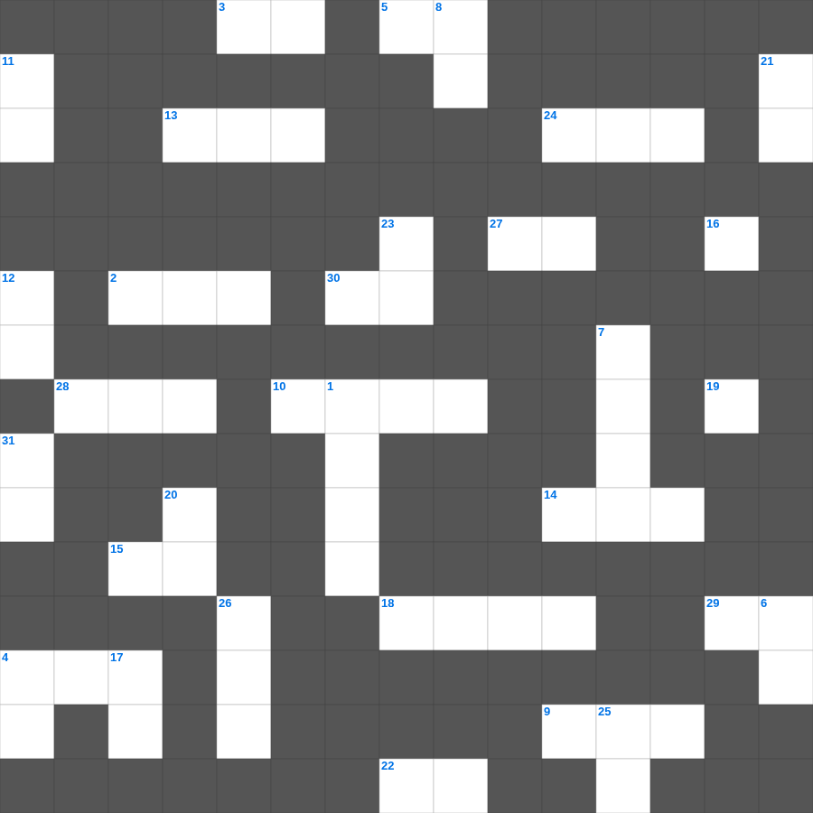

갈라디아서 마스터 50
📌 서비스 정의
십자가로세로는 교회 주보와 주일학교에서 사용할 수 있는 성경 기반 가로세로 퍼즐 서비스입니다. 성경 인물, 사건, 핵심 구절을 바탕으로 제작되었습니다. 온라인 풀이 및 인쇄 기능을 제공합니다.
📖 갈라디아서란?
갈라디아서는 율법주의에 빠지려는 갈라디아 교회를 향해, 오직 믿음으로 얻는 구원과 그리스도인의 자유를 강하게 변호한 바울의 서신입니다.
📚 갈라디아서의 주요 사건·주제
바울의 사도권 변호 · 오직 믿음으로 의롭다 함 · 율법과 약속의 관계 설명 · 그리스도인의 자유 선언 · 성령의 아홉 가지 열매
갈라디아서의 말씀을 퀴즈로 배우는 갈라디아서 성경 퀴즈 문제입니다. 가로 힌트와 세로 힌트를 보고 35개의 단어를 맞춰보세요. 인쇄도 가능하고 정답 확인도 바로 되니 소그룹 모임이나 가정 예배 시간에도 활용하실 수 있습니다.

📝 가로 힌트
1. 요한이 성령에 감동되어 들은 나팔 소리 같은 큰 음성을 들은 날
2. 제사장들이 요단 강에 발을 이것하자 물이 끊어짐
3. 요나가 다시스로 가기 위해 배를 탄 항구
4. 다윗의 도망 생활 중 함께한 환난 당한 자들의 수
5. 적게 심는 자는 적게 거두고 이것게 심는 자는 이것게 거둔다 하는 말이로다
9. 계시록 12장: 해를 옷 입은 한 여자가 낳은 아이를 삼키려 기다리는 존재
10. 한 입에서 찬송과 이것이 나오는도다
13. 사무엘의 아들들 '요엘과 이것'
14. 어떤 이들은 투기와 분쟁으로, 어떤 이들은 이것으로 그리스도를 전파하나니
15. 신명기의 히브리어 제목 뜻 '이것들은 이들이니라'
18. 제구시쯤에 예수께서 크게 소리 질러 이르시되 이것 이것 라마 사박다니
19. 이스라엘 진영 위를 덮고 있던 구름의 모양
20. 사랑하는 자들아 너희는 우리 주 예수 그리스도의 사도들이 미리 한 이것을 기억하라
22. 하나님께 드려진 성물은 함부로 이것하지 못함
24. 우리의 겉사람은 낡아지나 우리의 이것은 날로 새로워지도다
27. 너희는 외인도 아니요 나그네도 아니요 오직 성도들과 동일한 이것이요 하나님의 권속이라
28. 압살롬이 반역을 꾀하며 스스로 왕이 된 장소
29. 소고 치며 춤추어 찬양하며 현악과 이것으로 찬양할지어다
30. 포도나무 비유: 나를 떠나서는 너희가 아무것도 할 수 이것이라
📝 세로 힌트
1. 거짓 선생들이 부인하는 분
1. 주님 가르쳐 주신 기도
4. 아브라함의 아내
6. 홍해를 건넌 후 미리암이 잡고 춤추며 노래한 악기
7. 말라기 4장에서 예언된 '엘리야'는 신약의 누구를 가리키나
8. 모든 사람의 끝이 이와 같이 됨이라 산 자는 이것을 그의 마음에 둘지어다
11. 인자야 내가 너를 이스라엘 자손 곧 패역한 백성, 나를 이것 하는 자에게 보내노라
12. 너희를 위하여 하늘에 쌓아 둔 이것으로 말미암음이니 곧 너희가 전에 복음 진리의 말씀을 들은 것이라
16. 한 군인이 창으로 옆구리를 찌르니 곧 이것과 물이 나오더라
17. 너는 마음을 다하여 여호와를 신뢰하고 네 이것을 의지하지 말라
20. 성령의 검 곧 하나님의 이것을 가지라
21. 뱀이 그 간계로 이것을 미혹한 것 같이 너희 마음이 그리스도를 향하는 진실함과 깨끗함에서 떠나 부패할까 두려워하노라
23. 유다서 1장 20절: 지극히 거룩한 이것 위에 자신을 세우며
25. 허물로 죽은 우리를 그리스도와 함께 살리셨고 (너희는 이것으로 구원을 받은 것이라)
26. 모세가 가나안 땅을 바라본 산
31. 하늘은 나의 보좌요 땅은 나의 이것이니 너희가 나를 위하여 무슨 집을 지으랴
🧩 이 퍼즐에서 배우는 내용
이 퍼즐은 갈라디아서 마스터 50의 핵심 단어와 개념을 자연스럽게 복습할 수 있도록 구성되었습니다. 주일학교 수업이나 개인 성경공부에서 학습 내용을 점검하는 용도로 바로 활용할 수 있습니다.
🧑🏫 교회 교육 자료 활용
이 퍼즐은 주일학교 교재 추천 자료로 활용할 수 있고, 주일학교 주보에 넣기 좋은 분량으로 구성되어 있습니다. 수업용 주일학교 교안에 활동지로 붙이거나, 예배 후 복습용 주일학교 공과교재로 바로 사용할 수 있습니다.
🏷️ 키워드
갈라디아서 성경 퀴즈 문제, 갈라디아서, 십자가로세로, 성경퀴즈, 말씀퀴즈, 가로세로퍼즐, 주일학교 교재 추천, 주일학교 주보, 주일학교 교안, 주일학교 공과교재